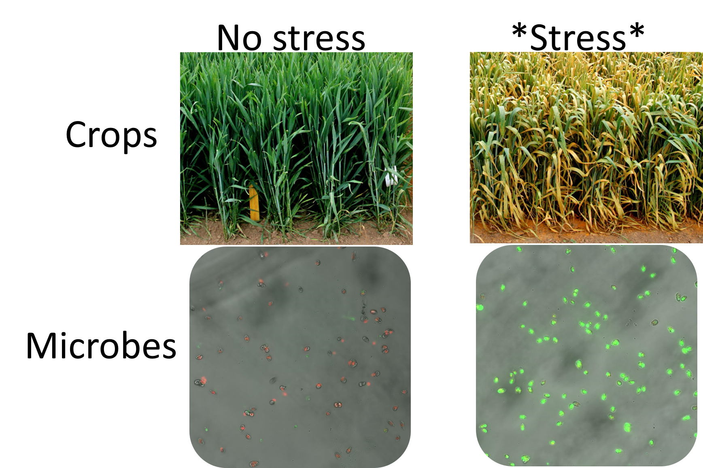

Protist Cell Signaling
{kind=link}
Like plants and animals, microbial eukaryotes communicate with one another. We know very little about how these processes work and how they evolve.
The problem

Microalgae are the main primary producers in aquatic systems, and like plants they have to cope with changing temperature, light, nutrients, toxins, and competition. Plants handle this with a chemical vocabulary: ethylene, abscisic acid, jasmonic acid, and salicylic acid coordinate stress responses within a plant, and volatile compounds and root exudates carry the information to neighbors.
Whether microalgae do anything comparable is almost entirely unstudied. Being unicellular, they also have options plants do not, working at the population level through stochastic switching and rapid mutation. Which of these a glaucophyte uses is unknown.
The approach
{kind=link}
Our first look at signaling in microeukaryotes was in Cyanophora paradoxa, a glaucophyte, chosen for two reasons that pull in opposite directions. 1) It is unusual: glaucophytes are one of the three Archaeplastida lineages descended from the [presumed] original plastid endosymbiosis. 2) Modern phylogenies also place glaucophytes as the sister lineage to green algae and land plants, which is where nearly everything known about cell signaling in photosynthetic organisms comes from. So it is far enough from the models to be worth asking, and close enough that the answers are interpretable.
No glaucophyte has had transgenic tools, so the work so far has been high-throughput rather than mechanistic: measure what the cells do when given a signal, map where the signaling proteins actually sit, and read out phosphorylation and transcription to see how the signal gets from the outside of the cell to the genome.
What we found

Cyanophora paradoxa makes ethylene under abiotic stress. It will also make it on demand: supplied with ACC, the precursor land plants use, the cells release ethylene as a gas.
The response looks like a signaling pathway rather than an isolated reaction. Reactive oxygen species accumulate after both stress and ACC treatment, consistent with a second messenger carrying the signal inward. Abscisic acid, a second plant hormone, interferes with ethylene synthesis from ACC while promoting ROS accumulation, so the two hormones interact. Cells treated with ACC grow more slowly, and their transcriptomes show upregulation of senescence-associated proteases, which fits what the growth data show.
Where it stands
Three directions are open. Which signals are used, and what carries them inward once received. Whether signaling between cells coordinates a response across a population, and whether a cell that receives a warning survives a later stress better than a naive one. And how a signal is integrated in cells whose architecture has no close parallel, where inference from homology gives out and the proteins have to be located directly.
Cyanophora is where we started, not where this stops. The same questions apply across microbial eukaryotes, and the answers are unlikely to be the same in each.
The work is unfunded at present and continues opportunistically. If you work on signaling in microbial eukaryotes and want to talk, get in touch.
Press
- Study illuminates cues algae use to ‘listen’ to their environment Bigelow Laboratory, 2024
- Maine lab explores whether stressed-out algae could help replace plastics Portland Press Herald, 2024
Collaborators
- Baptiste Genot, University of Tokyo. Led the glaucophyte hormone work.
- Stephen Archer, Bigelow Laboratory for Ocean Sciences. Trace gas measurement.
Support
Currently seeking support for this work.